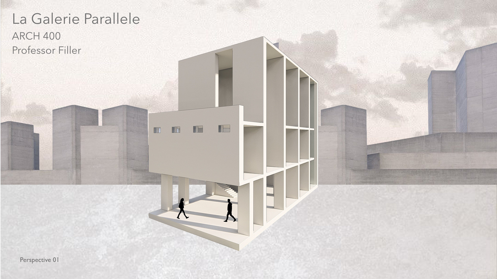

La Galerie Parallele

The concept behind the gallery is its repetitive element of bearing walls. These walls make up the structure of this building, creating a specific layout where it's able to divide spaces to its different functions.
Its primary vertical circulation point is within the main stairs that is accessible to all three floors. Circulation happens within each floor on its long corridors. This creates an axis while having two rows of bearing walls on both sides. As the walls start from the bottom and reach the top, they are able to form a grid that creates various spaces.
Some unique spaces are made in the exterior like the entrance and the outdoor terrace to balance out the interior space. These exterior spaces create voids that enhance the design of the facade.